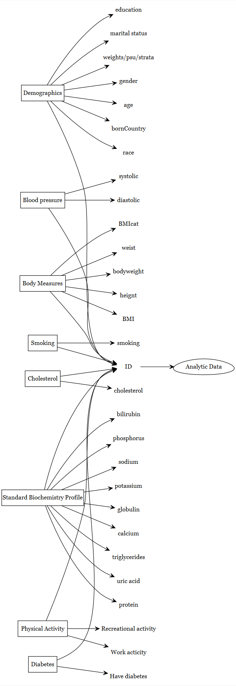
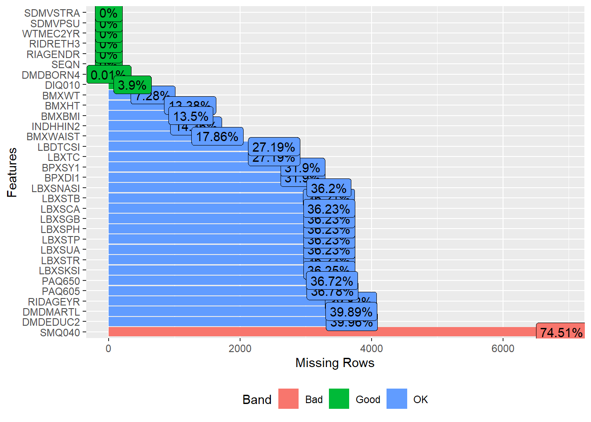

Causal question
Working with a causal question using NHANES
We are interested in exploring the relationship between diabetes (binary exposure variable defined as whether the doctor ever told the participant has diabetes) and cholesterol (binary outcome variable defined as whether total cholesterol is more than 200 mg/dL). Below is the PICOT:
| PICOT element | Description |
|---|---|
| P | US adults |
| I | Diabetes |
| C | No diabetes |
| O | Total cholesterol > 200 mg/dL |
| T | 2017–2018 |
First, we will prepare the analytic dataset from NHANES 2017–2018.
Second, we will work with subset of data to assess the association between diabetes and cholesterol, and to get proper SE and 95% CI for the estimate. We emphasize the correct usage of the survey’s design features (correct handling of survey design elements, such as stratification, clustering, and weighting) to obtain accurate population-level estimates.
Steps for creating analytic dataset
We will combine multiple components (e.g., demographic, blood pressure) using the unique identifier to create our analytic dataset.
Within NHANES datasets in a given cycle, each sampled person has an unique identifier sequence number (variable SEQN).
Download and Subsetting to retain only the useful variables
Search literature for the relevant variables, and then see if some of them are available in the NHANES data.
Peters, Fabian, and Levy (2014)
An an example, let us assume that variables listed in the following figures are known to be useful. Then we will try to indentify, in which NHANES component we have these variables.
Refer to the upcoming chapter to get a more detailed understanding of how we search for variables within NHANES.

NHANES Data Components:
- Demographic (variables like age, gender, income, etc.)
- Blood Pressure (Diastolic and Systolic pressure)
- Body Measures (BMI, Waist Circumference, etc.)
- Smoking Status (Current smoker or not)
- Cholesterol (Total cholesterol in different units)
- Biochemistry Profile (Triglycerides, Uric acid, etc.)
- Physical Activity (Vigorous work and recreational activities)
- Diabetes (Whether the respondent has been told by a doctor that they have diabetes)
Demographic component:
Show the code
demo <- nhanes('DEMO_J') # Both males and females 0 YEARS - 150 YEARS
demo <- demo[c("SEQN", # Respondent sequence number
"RIAGENDR", # gender
"RIDAGEYR", # Age in years at screening
"DMDBORN4", # Country of birth
"RIDRETH3", # Race/Hispanic origin w/ NH Asian
"DMDEDUC3", # Education level - Children/Youth 6-19
"DMDEDUC2", # Education level - Adults 20+
"DMDMARTL", # Marital status: 20 YEARS - 150 YEARS
"INDHHIN2", # Total household income
"WTMEC2YR", "SDMVPSU", "SDMVSTRA")]
demo_vars <- names(demo) # nhanesTableVars('DEMO', 'DEMO_J', namesonly=TRUE)
demo1 <- nhanesTranslate('DEMO_J', demo_vars, data=demo)
#> Translated columns: RIAGENDR DMDBORN4 RIDRETH3 DMDEDUC3 DMDEDUC2 DMDMARTL INDHHIN2Blood pressure component:
Show the code
bpx <- nhanes('BPX_J')
bpx <- bpx[c("SEQN", # Respondent sequence number
"BPXDI1", #Diastolic: Blood pres (1st rdg) mm Hg
"BPXSY1" # Systolic: Blood pres (1st rdg) mm Hg
)]
bpx_vars <- names(bpx)
bpx1 <- nhanesTranslate('BPX_J', bpx_vars, data=bpx)
#> Warning in nhanesTranslate("BPX_J", bpx_vars, data = bpx): No columns were
#> translatedBody measure component:
Show the code
bmi <- nhanes('BMX_J')
bmi <- bmi[c("SEQN", # Respondent sequence number
"BMXWT", # Weight (kg)
"BMXHT", # Standing Height (cm)
"BMXBMI", # Body Mass Index (kg/m**2): 2 YEARS - 150 YEARS
#"BMDBMIC", # BMI Category - Children/Youth # 2 YEARS - 19 YEARS
"BMXWAIST" # Waist Circumference (cm): 2 YEARS - 150 YEARS
)]
bmi_vars <- names(bmi)
bmi1 <- nhanesTranslate('BMX_J', bmi_vars, data=bmi)
#> Warning in nhanesTranslate("BMX_J", bmi_vars, data = bmi): No columns were
#> translatedSmoking component:
Show the code
smq <- nhanes('SMQ_J')
smq <- smq[c("SEQN", # Respondent sequence number
"SMQ040" # Do you now smoke cigarettes?: 18 YEARS - 150 YEARS
)]
smq_vars <- names(smq)
smq1 <- nhanesTranslate('SMQ_J', smq_vars, data=smq)
#> Translated columns: SMQ040Show the code
# alq <- nhanes('ALQ_J')
# alq <- alq[c("SEQN", # Respondent sequence number
# "ALQ130" # Avg # alcoholic drinks/day - past 12 mos
# # 18 YEARS - 150 YEARS
# )]
# alq_vars <- names(alq)
# alq1 <- nhanesTranslate('ALQ_J', alq_vars, data=alq)Cholesterol component:
Show the code
chl <- nhanes('TCHOL_J') # 6 YEARS - 150 YEARS
chl <- chl[c("SEQN", # Respondent sequence number
"LBXTC", # Total Cholesterol (mg/dL)
"LBDTCSI" # Total Cholesterol (mmol/L)
)]
chl_vars <- names(chl)
chl1 <- nhanesTranslate('TCHOL_J', chl_vars, data=chl)
#> Warning in nhanesTranslate("TCHOL_J", chl_vars, data = chl): No columns were
#> translatedBiochemistry Profile component:
Show the code
tri <- nhanes('BIOPRO_J') # 12 YEARS - 150 YEARS
tri <- tri[c("SEQN", # Respondent sequence number
"LBXSTR", # Triglycerides, refrig serum (mg/dL)
"LBXSUA", # Uric acid
"LBXSTP", # total Protein (g/dL)
"LBXSTB", # Total Bilirubin (mg/dL)
"LBXSPH", # Phosphorus (mg/dL)
"LBXSNASI", # Sodium (mmol/L)
"LBXSKSI", # Potassium (mmol/L)
"LBXSGB", # Globulin (g/dL)
"LBXSCA" # Total Calcium (mg/dL)
)]
tri_vars <- names(tri)
tri1 <- nhanesTranslate('BIOPRO_J', tri_vars, data=tri)
#> Warning in nhanesTranslate("BIOPRO_J", tri_vars, data = tri): No columns were
#> translatedPhysical activity component:
Show the code
paq <- nhanes('PAQ_J')
paq <- paq[c("SEQN", # Respondent sequence number
"PAQ605", # Vigorous work activity
"PAQ650" # Vigorous recreational activities
)]
paq_vars <- names(paq)
paq1 <- nhanesTranslate('PAQ_J', paq_vars, data=paq)
#> Translated columns: PAQ605 PAQ650Diabetes component:
Show the code
diq <- nhanes('DIQ_J')
diq <- diq[c("SEQN", # Respondent sequence number
"DIQ010" # Doctor told you have diabetes
)]
diq_vars <- names(diq)
diq1 <- nhanesTranslate('DIQ_J', diq_vars, data=diq)
#> Translated columns: DIQ010Merging all the datasets
We can use the merge or Reduce function to combine the datasets
All these datasets are merged into one analytic dataset using the SEQN as the key. This can be done either all at once using the Reduce function or one by one (using merge once at a time).
Show the code
# Merging one by one
# analytic.data0 <- merge(demo1, bpx1, by = c("SEQN"), all=TRUE)
# analytic.data1 <- merge(analytic.data0, bmi1, by = c("SEQN"), all=TRUE)
# analytic.data2 <- merge(analytic.data1, smq1, by = c("SEQN"), all=TRUE)
# analytic.data3 <- merge(analytic.data2, alq1, by = c("SEQN"), all=TRUE)
# analytic.data4 <- merge(analytic.data3, chl1, by = c("SEQN"), all=TRUE)
# analytic.data5 <- merge(analytic.data4, tri1, by = c("SEQN"), all=TRUE)
# analytic.data6 <- merge(analytic.data5, paq1, by = c("SEQN"), all=TRUE)
# analytic.data7 <- merge(analytic.data6, diq1, by = c("SEQN"), all=TRUE)
# dim(analytic.data7)Check Target population and avoid zero-cell cross-tabulation
The dataset is then filtered to only include adults (20 years and older) and avoid zero-cell cross-tabulation.
See that marital status variable was restricted to 20 YEARS - 150 YEARS.
Show the code
str(analytic.data7)
#> 'data.frame': 9254 obs. of 33 variables:
#> $ SEQN : num 93703 93704 93705 93706 93707 ...
#> $ RIAGENDR: Factor w/ 2 levels "Male","Female": 2 1 2 1 1 2 2 2 1 1 ...
#> $ RIDAGEYR: num 2 2 66 18 13 66 75 0 56 18 ...
#> $ DMDBORN4: Factor w/ 4 levels "Born in 50 US states or Washingt",..: 1 1 1 1 1 2 1 1 2 2 ...
#> $ RIDRETH3: Factor w/ 6 levels "Mexican American",..: 5 3 4 5 6 5 4 3 5 1 ...
#> $ DMDEDUC3: Factor w/ 17 levels "Never attended / kindergarten on",..: NA NA NA 16 7 NA NA NA NA 13 ...
#> $ DMDEDUC2: Factor w/ 7 levels "Less than 9th grade",..: NA NA 2 NA NA 1 4 NA 5 NA ...
#> $ DMDMARTL: Factor w/ 7 levels "Married","Widowed",..: NA NA 3 NA NA 1 2 NA 1 NA ...
#> $ INDHHIN2: Factor w/ 16 levels "$ 0 to $ 4,999",..: 14 14 3 NA 10 6 2 14 14 4 ...
#> $ WTMEC2YR: num 8540 42567 8338 8723 7065 ...
#> $ SDMVPSU : num 2 1 2 2 1 2 1 1 2 2 ...
#> $ SDMVSTRA: num 145 143 145 134 138 138 136 134 134 147 ...
#> $ BPXDI1 : num NA NA NA 74 38 NA 66 NA 68 68 ...
#> $ BPXSY1 : num NA NA NA 112 128 NA 120 NA 108 112 ...
#> $ BMXWT : num 13.7 13.9 79.5 66.3 45.4 53.5 88.8 10.2 62.1 58.9 ...
#> $ BMXHT : num 88.6 94.2 158.3 175.7 158.4 ...
#> $ BMXBMI : num 17.5 15.7 31.7 21.5 18.1 23.7 38.9 NA 21.3 19.7 ...
#> $ BMXWAIST: num 48.2 50 101.8 79.3 64.1 ...
#> $ SMQ040 : Factor w/ 3 levels "Every day","Some days",..: NA NA 3 NA NA NA 1 NA NA 2 ...
#> $ LBXTC : num NA NA 157 148 189 209 176 NA 238 182 ...
#> $ LBDTCSI : num NA NA 4.06 3.83 4.89 5.4 4.55 NA 6.15 4.71 ...
#> $ LBXSTR : num NA NA 95 92 110 72 132 NA 59 124 ...
#> $ LBXSUA : num NA NA 5.8 8 5.5 4.5 6.2 NA 4.2 5.8 ...
#> $ LBXSTP : num NA NA 7.3 7.1 8 7.1 7 NA 7.1 8.1 ...
#> $ LBXSTB : num NA NA 0.6 0.7 0.7 0.5 0.3 NA 0.3 0.8 ...
#> $ LBXSPH : num NA NA 4 4 4.3 3.3 3.5 NA 3.4 5.1 ...
#> $ LBXSNASI: num NA NA 141 144 137 144 141 NA 140 141 ...
#> $ LBXSKSI : num NA NA 4 4.4 3.3 4.4 4.1 NA 4.9 4.3 ...
#> $ LBXSGB : num NA NA 2.9 2.7 2.8 3.2 3.3 NA 3.1 3.3 ...
#> $ LBXSCA : num NA NA 9.2 9.6 10.1 9.5 9.9 NA 9.4 9.6 ...
#> $ PAQ605 : Factor w/ 3 levels "Yes","No","Don't know": NA NA 2 2 NA 2 2 NA 2 1 ...
#> $ PAQ650 : Factor w/ 2 levels "Yes","No": NA NA 2 2 NA 2 2 NA 1 1 ...
#> $ DIQ010 : Factor w/ 4 levels "Yes","No","Borderline",..: 2 2 2 2 2 3 2 NA 2 2 ...
head(analytic.data7)Show the code
summary(analytic.data7$RIDAGEYR)
#> Min. 1st Qu. Median Mean 3rd Qu. Max.
#> 0.00 11.00 31.00 34.33 58.00 80.00Get rid of variables where target was less than 20 years of age accordingly.
Show the code
analytic.data8$DMDEDUC3 <- NULL # not relevant for adults
#analytic.data8$BMDBMIC <- NULL # not relevant for adultsGet rid of invalid responses
Variables that have “Don’t Know” or “Refused” as responses are set to NA, effectively getting rid of invalid responses.
Show the code
factor.names <- c("RIAGENDR","DMDBORN4","RIDRETH3",
"DMDEDUC2","DMDMARTL","INDHHIN2",
"SMQ040", "PAQ605", "PAQ650", "DIQ010")
numeric.names <- c("SEQN","RIDAGEYR","WTMEC2YR",
"SDMVPSU", "SDMVSTRA",
"BPXDI1", "BPXSY1", "BMXWT", "BMXHT",
"BMXBMI", "BMXWAIST",
"ALQ130", "LBXTC", "LBDTCSI",
"LBXSTR", "LBXSUA", "LBXSTP", "LBXSTB",
"LBXSPH", "LBXSNASI", "LBXSKSI",
"LBXSGB","LBXSCA")
analytic.data8[factor.names] <- apply(X = analytic.data8[factor.names],
MARGIN = 2, FUN = as.factor)
# analytic.data8[numeric.names] <- apply(X = analytic.data8[numeric.names],
# MARGIN = 2, FUN =
# function (x) as.numeric(as.character(x)))Show the code
analytic.data9 <- analytic.data8
analytic.data9$DMDBORN4[analytic.data9$DMDBORN4 == "Don't Know"] <- NA
#analytic.data9 <- subset(analytic.data8, DMDBORN4 != "Don't Know")
dim(analytic.data9)
#> [1] 9254 32
analytic.data10 <- analytic.data9
analytic.data10$DMDEDUC2[analytic.data10$DMDEDUC2 == "Don't Know"] <- NA
#analytic.data10 <- subset(analytic.data9, DMDEDUC2 != "Don't Know")
dim(analytic.data10)
#> [1] 9254 32
analytic.data11 <- analytic.data10
analytic.data11$DMDMARTL[analytic.data11$DMDMARTL == "Don't Know"] <- NA
analytic.data11$DMDMARTL[analytic.data11$DMDMARTL == "Refused"] <- NA
# analytic.data11 <- subset(analytic.data10, DMDMARTL != "Don't Know" & DMDMARTL != "Refused")
dim(analytic.data11)
#> [1] 9254 32
analytic.data12 <- analytic.data11
analytic.data12$INDHHIN2[analytic.data12$INDHHIN2 == "Don't Know"] <- NA
analytic.data12$INDHHIN2[analytic.data12$INDHHIN2 == "Refused"] <- NA
analytic.data12$INDHHIN2[analytic.data12$INDHHIN2 == "Under $20,000"] <- NA
analytic.data12$INDHHIN2[analytic.data12$INDHHIN2 == "$20,000 and Over"] <- NA
# analytic.data12 <- subset(analytic.data11, INDHHIN2 != "Don't know" & INDHHIN2 != "Refused" & INDHHIN2 != "Under $20,000" & INDHHIN2 != "$20,000 and Over" )
dim(analytic.data12)
#> [1] 9254 32
#analytic.data11 <- subset(analytic.data10, ALQ130 != 777 & ALQ130 != 999 )
#dim(analytic.data11) # this are listed as NA anyway
analytic.data13 <- analytic.data12
analytic.data13$PAQ605[analytic.data13$PAQ605 == "Don't know"] <- NA
analytic.data13$PAQ605[analytic.data13$PAQ605 == "Refused"] <- NA
# analytic.data13 <- subset(analytic.data12, PAQ605 != "Don't know" & PAQ605 != "Refused")
dim(analytic.data13)
#> [1] 9254 32
analytic.data14 <- analytic.data13
analytic.data14$PAQ650[analytic.data14$PAQ650 == "Don't know"] <- NA
analytic.data14$PAQ650[analytic.data14$PAQ650 == "Refused"] <- NA
# analytic.data14 <- subset(analytic.data13, PAQ650 != "Don't Know" & PAQ650 != "Refused")
dim(analytic.data14)
#> [1] 9254 32
analytic.data15 <- analytic.data14
analytic.data15$DIQ010[analytic.data15$DIQ010 == "Don't know"] <- NA
analytic.data15$DIQ010[analytic.data15$DIQ010 == "Refused"] <- NA
# analytic.data15 <- subset(analytic.data14, DIQ010 != "Don't Know" & DIQ010 != "Refused")
dim(analytic.data15)
#> [1] 9254 32
# analytic.data15$ALQ130[analytic.data15$ALQ130 > 100] <- NA
# summary(analytic.data15$ALQ130)
table(analytic.data15$SMQ040,useNA = "always")
#>
#> Every day Not at all Some days <NA>
#> 805 1338 216 6895
table(analytic.data15$PAQ605,useNA = "always")
#>
#> No Yes <NA>
#> 4461 1389 3404
table(analytic.data15$PAQ650,useNA = "always")
#>
#> No Yes <NA>
#> 4422 1434 3398
table(analytic.data15$PAQ650,useNA = "always")
#>
#> No Yes <NA>
#> 4422 1434 3398Recode values
Let us recode the variables using the recode function:
Show the code
require(car)
#> Loading required package: car
#> Loading required package: carData
analytic.data15$RIDRETH3 <- recode(analytic.data15$RIDRETH3,
"c('Mexican American','Other Hispanic')='Hispanic';
'Non-Hispanic White'='White';
'Non-Hispanic Black'='Black';
c('Non-Hispanic Asian',
'Other Race - Including Multi-Rac')='Other';
else=NA")
analytic.data15$DMDEDUC2 <- recode(analytic.data15$DMDEDUC2,
"c('Some college or AA degree',
'College graduate or above')='College';
c('9-11th grade (Includes 12th grad',
'High school graduate/GED or equi')
='High.School';
'Less than 9th grade'='School';
else=NA")
analytic.data15$DMDMARTL <- recode(analytic.data15$DMDMARTL,
"c('Divorced','Separated','Widowed')
='Previously.married';
c('Living with partner', 'Married')
='Married';
'Never married'='Never.married';
else=NA")
analytic.data15$INDHHIN2 <- recode(analytic.data15$INDHHIN2,
"c('$ 0 to $ 4,999', '$ 5,000 to $ 9,999',
'$10,000 to $14,999', '$15,000 to $19,999',
'$20,000 to $24,999')='<25k';
c('$25,000 to $34,999', '$35,000 to $44,999',
'$45,000 to $54,999') = 'Between.25kto54k';
c('$55,000 to $64,999', '$65,000 to $74,999',
'$75,000 to $99,999')='Between.55kto99k';
'$100,000 and Over'= 'Over100k';
else=NA")
analytic.data15$SMQ040 <- recode(analytic.data15$SMQ040,
"'Every day'='Every.day';
'Not at all'='Not.at.all';
'Some days'='Some.days';
else=NA")
analytic.data15$DIQ010 <- recode(analytic.data15$DIQ010,
"'No'='No';
c('Yes', 'Borderline')='Yes';
else=NA")Data types for various variables are set correctly; for instance, factor variables are converted to factor data types, and numeric variables to numeric data types.
Check missingness
We can use the plot_missing function to plot the profile of missing values, e.g., the percentage of missing per variable
Show the code
require(DataExplorer)
#> Loading required package: DataExplorer
#> Warning: package 'DataExplorer' was built under R version 4.3.1
plot_missing(analytic.data15)
A subsequent chapter will delve into the additional factors that impact how we handle missing data.
Check data summaries
Show the code
names(analytic.data15)
#> [1] "SEQN" "RIAGENDR" "RIDAGEYR" "DMDBORN4" "RIDRETH3" "DMDEDUC2"
#> [7] "DMDMARTL" "INDHHIN2" "WTMEC2YR" "SDMVPSU" "SDMVSTRA" "BPXDI1"
#> [13] "BPXSY1" "BMXWT" "BMXHT" "BMXBMI" "BMXWAIST" "SMQ040"
#> [19] "LBXTC" "LBDTCSI" "LBXSTR" "LBXSUA" "LBXSTP" "LBXSTB"
#> [25] "LBXSPH" "LBXSNASI" "LBXSKSI" "LBXSGB" "LBXSCA" "PAQ605"
#> [31] "PAQ650" "DIQ010"
names(analytic.data15) <- c("ID", "gender", "age", "born", "race", "education",
"married", "income", "weight", "psu", "strata", "diastolicBP",
"systolicBP", "bodyweight", "bodyheight", "bmi", "waist", "smoke",
"cholesterol", "cholesterolM2", "triglycerides",
"uric.acid", "protein", "bilirubin", "phosphorus", "sodium",
"potassium", "globulin", "calcium", "physical.work",
"physical.recreational","diabetes")
require("tableone")
#> Loading required package: tableone
CreateTableOne(data = analytic.data15, includeNA = TRUE)
#>
#> Overall
#> n 9254
#> ID (mean (SD)) 98329.50 (2671.54)
#> gender = Male (%) 4557 (49.2)
#> age (mean (SD)) 51.50 (17.81)
#> born (%)
#> Born in 50 US states or Washingt 7303 (78.9)
#> Others 1948 (21.1)
#> Refused 2 ( 0.0)
#> NA 1 ( 0.0)
#> race (%)
#> Black 2115 (22.9)
#> Hispanic 2187 (23.6)
#> Other 1802 (19.5)
#> White 3150 (34.0)
#> education (%)
#> College 3114 (33.7)
#> High.School 1963 (21.2)
#> School 479 ( 5.2)
#> NA 3698 (40.0)
#> married (%)
#> Married 3252 (35.1)
#> Never.married 1006 (10.9)
#> Previously.married 1305 (14.1)
#> NA 3691 (39.9)
#> income (%)
#> <25k 1998 (21.6)
#> Between.25kto54k 2460 (26.6)
#> Between.55kto99k 1843 (19.9)
#> Over100k 1624 (17.5)
#> NA 1329 (14.4)
#> weight (mean (SD)) 34670.71 (43344.00)
#> psu (mean (SD)) 1.52 (0.50)
#> strata (mean (SD)) 140.97 (4.20)
#> diastolicBP (mean (SD)) 67.84 (16.36)
#> systolicBP (mean (SD)) 121.33 (19.98)
#> bodyweight (mean (SD)) 65.14 (32.89)
#> bodyheight (mean (SD)) 156.59 (22.26)
#> bmi (mean (SD)) 26.58 (8.26)
#> waist (mean (SD)) 89.93 (22.81)
#> smoke (%)
#> Every.day 805 ( 8.7)
#> Not.at.all 1338 (14.5)
#> Some.days 216 ( 2.3)
#> NA 6895 (74.5)
#> cholesterol (mean (SD)) 179.89 (40.60)
#> cholesterolM2 (mean (SD)) 4.65 (1.05)
#> triglycerides (mean (SD)) 137.44 (109.13)
#> uric.acid (mean (SD)) 5.40 (1.48)
#> protein (mean (SD)) 7.17 (0.44)
#> bilirubin (mean (SD)) 0.46 (0.28)
#> phosphorus (mean (SD)) 3.66 (0.59)
#> sodium (mean (SD)) 140.32 (2.75)
#> potassium (mean (SD)) 4.09 (0.36)
#> globulin (mean (SD)) 3.09 (0.43)
#> calcium (mean (SD)) 9.32 (0.37)
#> physical.work (%)
#> No 4461 (48.2)
#> Yes 1389 (15.0)
#> NA 3404 (36.8)
#> physical.recreational (%)
#> No 4422 (47.8)
#> Yes 1434 (15.5)
#> NA 3398 (36.7)
#> diabetes (%)
#> No 7816 (84.5)
#> Yes 1077 (11.6)
#> NA 361 ( 3.9)Create complete case data (for now)
Show the code
analytic.with.miss <- analytic.data15
analytic.with.miss$cholesterol.bin <- ifelse(analytic.with.miss$cholesterol <200, 1,0)
analytic <- as.data.frame(na.omit(analytic.with.miss))
dim(analytic)
#> [1] 1562 33Creating Table 1 from the complete case data
Show the code
require("tableone")
CreateTableOne(data = analytic, includeNA = TRUE)
#>
#> Overall
#> n 1562
#> ID (mean (SD)) 98344.21 (2697.76)
#> gender = Male (%) 959 (61.4)
#> age (mean (SD)) 53.18 (17.18)
#> born = Others (%) 299 (19.1)
#> race (%)
#> Black 324 (20.7)
#> Hispanic 284 (18.2)
#> Other 228 (14.6)
#> White 726 (46.5)
#> education (%)
#> College 806 (51.6)
#> High.School 658 (42.1)
#> School 98 ( 6.3)
#> married (%)
#> Married 921 (59.0)
#> Never.married 228 (14.6)
#> Previously.married 413 (26.4)
#> income (%)
#> <25k 484 (31.0)
#> Between.25kto54k 520 (33.3)
#> Between.55kto99k 331 (21.2)
#> Over100k 227 (14.5)
#> weight (mean (SD)) 48538.53 (54106.24)
#> psu (mean (SD)) 1.48 (0.50)
#> strata (mean (SD)) 141.18 (4.07)
#> diastolicBP (mean (SD)) 72.06 (14.17)
#> systolicBP (mean (SD)) 127.06 (19.11)
#> bodyweight (mean (SD)) 85.66 (22.41)
#> bodyheight (mean (SD)) 168.96 (9.30)
#> bmi (mean (SD)) 29.96 (7.33)
#> waist (mean (SD)) 102.98 (17.15)
#> smoke (%)
#> Every.day 530 (33.9)
#> Not.at.all 903 (57.8)
#> Some.days 129 ( 8.3)
#> cholesterol (mean (SD)) 188.77 (43.51)
#> cholesterolM2 (mean (SD)) 4.88 (1.13)
#> triglycerides (mean (SD)) 154.71 (123.00)
#> uric.acid (mean (SD)) 5.62 (1.53)
#> protein (mean (SD)) 7.09 (0.43)
#> bilirubin (mean (SD)) 0.46 (0.27)
#> phosphorus (mean (SD)) 3.53 (0.54)
#> sodium (mean (SD)) 140.14 (2.83)
#> potassium (mean (SD)) 4.10 (0.38)
#> globulin (mean (SD)) 3.03 (0.44)
#> calcium (mean (SD)) 9.29 (0.37)
#> physical.work = Yes (%) 476 (30.5)
#> physical.recreational = Yes (%) 290 (18.6)
#> diabetes = Yes (%) 330 (21.1)
#> cholesterol.bin (mean (SD)) 0.63 (0.48)Additional factors come into play when dealing with complex survey datasets; these will be explored in a subsequent chapter.
Saving data
Show the code
# getwd()
save(analytic.with.miss, analytic, file="Data/researchquestion/NHANES17.RData")